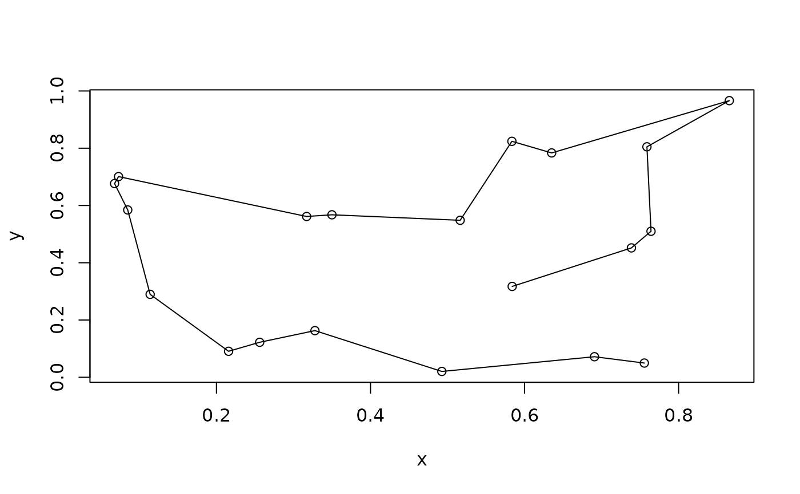
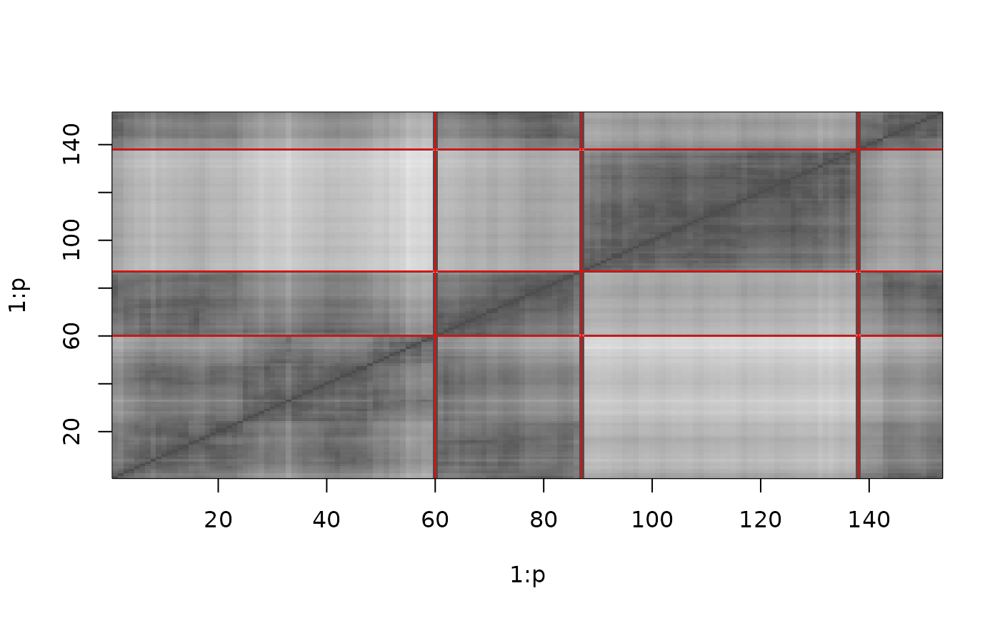
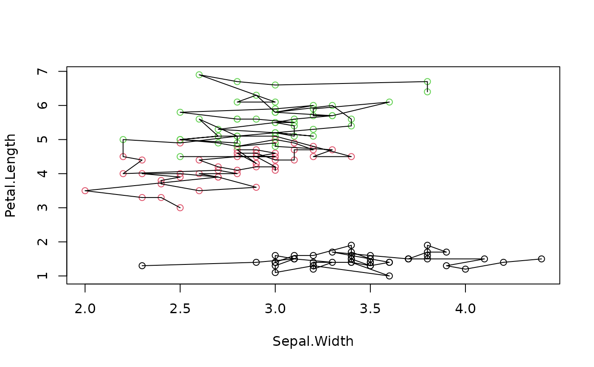

Inserts dummy cities into a TSP problem. A dummy city has the same, constant distance (0) to all other cities and is infinitely far from other dummy cities. A dummy city can be used to transform a shortest Hamiltonian path problem (i.e., finding an optimal linear order) into a shortest Hamiltonian cycle problem which can be solved by a TSP solver (Garfinkel 1985).
Usage
insert_dummy(x, n = 1, const = 0, inf = Inf, label = "dummy")
# S3 method for class 'TSP'
insert_dummy(x, n = 1, const = 0, inf = Inf, label = "dummy")
# S3 method for class 'ATSP'
insert_dummy(x, n = 1, const = 0, inf = Inf, label = "dummy")
# S3 method for class 'ETSP'
insert_dummy(x, n = 1, const = 0, inf = Inf, label = "dummy")Details
Several dummy cities can be used together with a TSP solver to perform rearrangement clustering (Climer and Zhang 2006).
The dummy cities are inserted after the other cities in x.
A const of 0 is guaranteed to work if the TSP finds the optimal
solution. For heuristics returning suboptimal solutions, a higher
const (e.g., 2 * max(x)) might provide better results.
References
Sharlee Climer, Weixiong Zhang (2006): Rearrangement Clustering: Pitfalls, Remedies, and Applications, Journal of Machine Learning Research 7(Jun), pp. 919–943.
R.S. Garfinkel (1985): Motivation and modelling (chapter 2). In: E. L. Lawler, J. K. Lenstra, A.H.G. Rinnooy Kan, D. B. Shmoys (eds.) The traveling salesman problem - A guided tour of combinatorial optimization, Wiley & Sons.
See also
Other TSP:
ATSP(),
Concorde,
ETSP(),
TSP(),
TSPLIB,
reformulate_ATSP_as_TSP(),
solve_TSP()
Examples
## Example 1: Find a short Hamiltonian path
set.seed(1000)
x <- data.frame(x = runif(20), y = runif(20), row.names = LETTERS[1:20])
tsp <- TSP(dist(x))
## add a dummy city to cut the tour into a path
tsp <- insert_dummy(tsp, label = "cut")
tour <- solve_TSP(tsp)
tour
#> object of class ‘TOUR’
#> result of method ‘arbitrary_insertion+two_opt’ for 21 cities
#> tour length: 3.145743
plot(x)
lines(x[cut_tour(tour, cut = "cut"),])

## Example 2: Rearrangement clustering of the iris dataset
set.seed(1000)
data("iris")
tsp <- TSP(dist(iris[-5]))
## insert 2 dummy cities to create 2 clusters
tsp_dummy <- insert_dummy(tsp, n = 3, label = "boundary")
## get a solution for the TSP
tour <- solve_TSP(tsp_dummy)
## plot the reordered distance matrix with the dummy cities as lines separating
## the clusters
image(tsp_dummy, tour)
abline(h = which(labels(tour)=="boundary"), col = "red")
abline(v = which(labels(tour)=="boundary"), col = "red")

## plot the original data with paths connecting the points in each cluster
plot(iris[,c(2,3)], col = iris[,5])
paths <- cut_tour(tour, cut = "boundary")
for(p in paths) lines(iris[p, c(2,3)])

## Note: The clustering is not perfect!